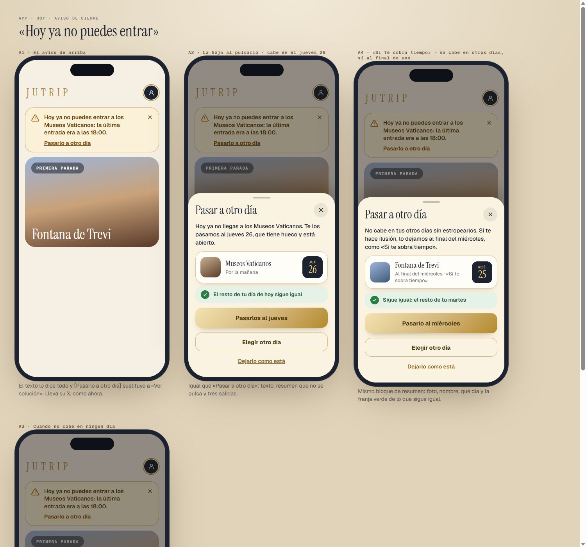
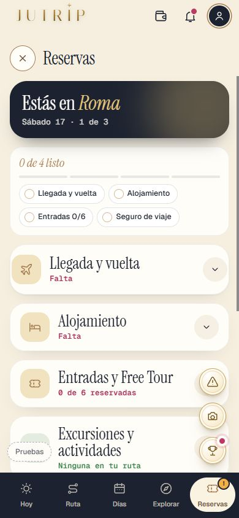
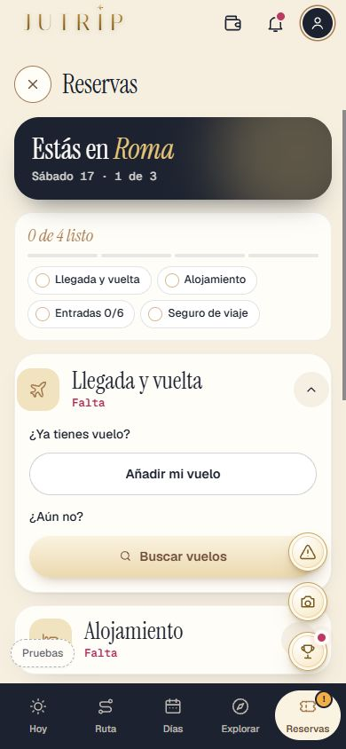
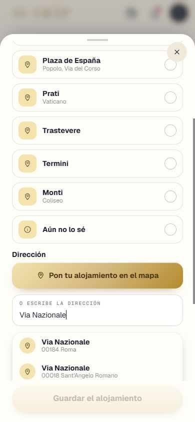

Capturas en modo iPhone. Sin pruebas (tanda de pruebas esta noche): solo npm run build y estas capturas. Detalle en docs/dias/DECISIONES_V50.md. Pantallas copiadas (regla nueva «no se inventa un diseño»): la hoja de «Pasar a otro día» copia HojaPropuesta (la de Cambiar plan) con el dibujo A2; «Llegada y vuelta» sin vuelos copia el bloque de «Alojamiento»; las sugerencias del campo de dirección copian la lista del mapa M2.
El enlace del aviso es [Pasar a otro día]; la hoja es la de «Pasar a otro día» con la tarjeta del sitio y la franja verde (la misma para Cambiar plan). Si no cabe en ningún día: A3 con [Guardarlos en pendientes]. No he podido ver en pantalla el aviso A1 ni la hoja A3 (con los datos del viaje de pruebas la app manda los Museos a pendientes antes de enseñar el aviso).




Rueda de la hora sin X (se cierra tocando fuera o deslizando, sin guardar); «Esta tarjeta de embarque…»; al subir una entrada o excursión con otro día/hora la app lo corrige y lo dice con [Deshacer]; entradas en otro día con [Deshacer]; y las excursiones de Roma sin puntos de encuentro ni horas inventados (lista exacta en DECISIONES).
Ninguna prueba. No he visto en pantalla A1, A3, el [Deshacer] de las entradas en otro día, la corrección al subir una entrada/excursión, ni la rueda de la hora sin X. «Esta entrada…»/«Esta reserva…» del aviso naranja no están (esas tarjetas no pintan la línea naranja).